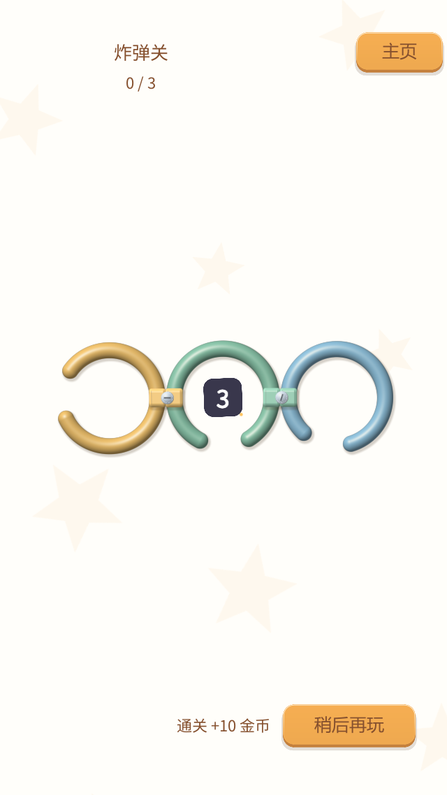
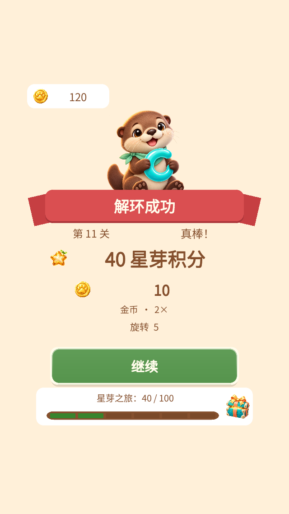

开口和连接决定解题顺序
玩家可以从外围先拆，逐步腾出空间，再处理分叉和闭环。

AI GAME DEVELOPMENT / 个人作品
我用 AI 把旋转解扣做成了一款休闲解谜游戏。
我确定玩法、反馈和关卡节奏，用 AI 将设计做进 Unity。作品包含 30 个炸弹关、30 个奖励关，以及从每日挑战到海狸换装的奖励流程。
我先拆解玩家在每一步需要知道什么。拖动时要看清选中的环，解扣时要确认连接已经打开，清场后要知道拿到了什么。
我用 AI 把需求做成可操作的棋盘、关卡和界面，再按这些场景逐项检查。比如旋转时，我用绿边指出正在操作的环，保留环的原色来区分周围的连接。
在每日挑战里，我把「难度要高」转成 AI 可以落实和检验的规则。我给出解锁门槛、挑战次数、道具要求和皮肤奖励，再用关卡解题回放核对关键步骤，用界面演示检查奖励怎样回到主页。

我将 30 个炸弹关和 30 个奖励关穿插进普通关卡。玩家沿用已经学会的旋转解扣操作，每种关卡都有清楚的目标。
炸弹由有效操作回合推进。玩家要先看连接关系，再决定哪一步值得消耗回合。

玩家可以按自己的节奏收集，关卡允许部分结算。

完成 10 个普通关后解锁，每天一次，退出后可续玩同一局。首题有 24 环、29 扣，用大环保留开口和连接处的辨认空间。
我设定了至少用两次木槌才可过关的目标，AI 协助把它落实为两处需要清除的封闭结构。棋盘配有专用木槌，玩家还要判断关键连接的先后顺序。

赢下每日挑战后，玩家获得新海狸外观 Night Keeper，可以在主页衣柜预览和穿戴。

清场后展示本局积分与奖励，再提供继续闯关的入口。图中是使用演示存档完成的一局。
